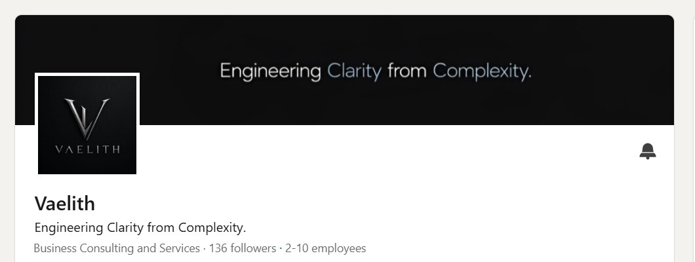

Vaelith starts from a simple belief: every organization is a system. Data, processes, technology and people can't be optimized in isolation — they have to work together as a coherent whole.

Vaelith on LinkedIn
Methodology
Systemic Engineering — helping organizations understand their own systems, improve decision-making and build solutions that scale with confidence.
Approach
Data, engineering, automation and artificial intelligence are used as tools for designing better systems, not as products in themselves.
Work
Working products including Beacon, Business Health Scanner and Churn Predictor.
Market
A B2B practice with a slight B2C edge.
Traction
Built an early audience of 130+ LinkedIn followers within its first month.